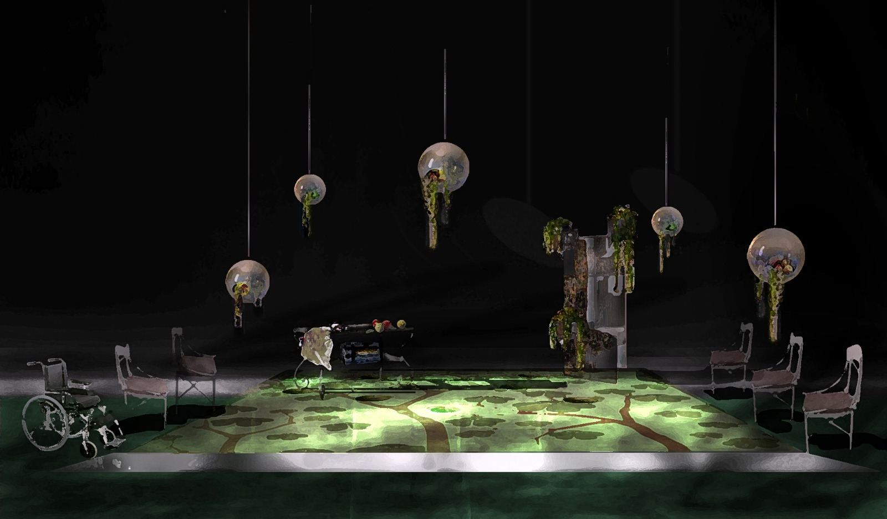

Últimas noticias
Dos escenografías en diciembre de 2020
En este mes de diciembre tienes dos oportunidades para ver las escenografías de Arturo en directo. La primera es J´attendrai, obra de José Ramón Fernández representada por Factoría Teatro e Inconstantes Teatro. Estará en el Teatro Español (Naves del Español en Matadero) del 3 al 27 de diciembre. En palabras del artista:
J’attendrai no es una historia sobre el terror nazi, sino sobre sus secuelas. Es la historia de un amor que no culmina porque él parte un día a defender Francia de la invasión nazi, lo apresan y no regresa jamás. Mi idea para el espacio escénico pretendía un acercamiento no realista ni demasiado descriptivo. Sin imágenes ni palabras, solo referencias acaso surrealistas a las visiones de los muertos que deambulan por la escena, a los recuerdos dolorosos encapsulados en unas oníricas esferas suspendidas en el tiempo, en el espacio infinito e intangible de la memoria del horror. Esferas que son también un bosque, una casa de campo con manzanos... un espacio atemporal, asimétrico e inquietante.

La segunda es el reestreno de 24 horas en la vida de una mujer, de Stephan Zweig. En el Teatro Galileo del 4 de diciembre al 10 de enero.
Vídeo: Polifonía del XVI vs. Expresionismo abstracto
Nuevo vídeo de Arturo publicado en su canal.
Arturo Martín Burgos en el Museo extremeño e iberoamericano de arte contemporáneo (MEIAC)

El Museo extremeño e iberoamericano de arte contemporáneo (MEIAC) incorpora a su colección de pintura la obra de Arturo Martín Burgos titulada Paisaje de Vermont (1989, técnica mixta sobre lienzo, 272 x 224 cm).
El cuadro ha sido donado al museo por el galerista Ángel Romero, con quien Arturo trabajó en los años 90 realizando varias exposiciones individuales y colectivas en la galería que lleva su nombre. El lienzo forma parte de un conjunto de obras de gran formato de varios artistas que trabajaron para la galería entre los que se encuentran, entre otros, Manuel Rufo, Elena Blasco o Carlos León.

Pintura: Kyrie de la Misa Pro Victoria, por Tomás Luis de Victoria
Arturo ha colaborado en este vídeo del coro Zenobia Consort, donde canta como bajo, realizando una pintura basada en la misa Pro Victoria, compuesta por el abulense Tomás Luis de Victoria.
La obra forma parte de la serie de pinturas sobre música.
Escenografía
Arturo ha realizado la escenografía de múltiples obras durante más de tres décadas, incluyendo El triángulo azul por la que recibió el premio MAX 2015.

Más escenografía.
Pintura
Con más de 20 exposiciones individuales y un centenar colectivas, son casi 40 años de trabajo en la pintura, en el territorio del expresionismo. A veces abstracto, a veces fotográfico u objetual, pero siempre buscando acercarse al gesto puro, a la expresión vital y contundente de emociones humanas.

Puedes visitar parte de su obra pictórica.
Acerca de Arturo Martín Burgos
Licenciado en Bellas Artes por la Universidad Complutense de Madrid en 1985. Profesor de Pintura en la Universidad Popular de Alcobendas.
Artista polifacético con una extensa y prolífica obra, no ha dejado ninguna de las facetas de las artes plásticas por trabajar.
Puedes consultar su biografía.